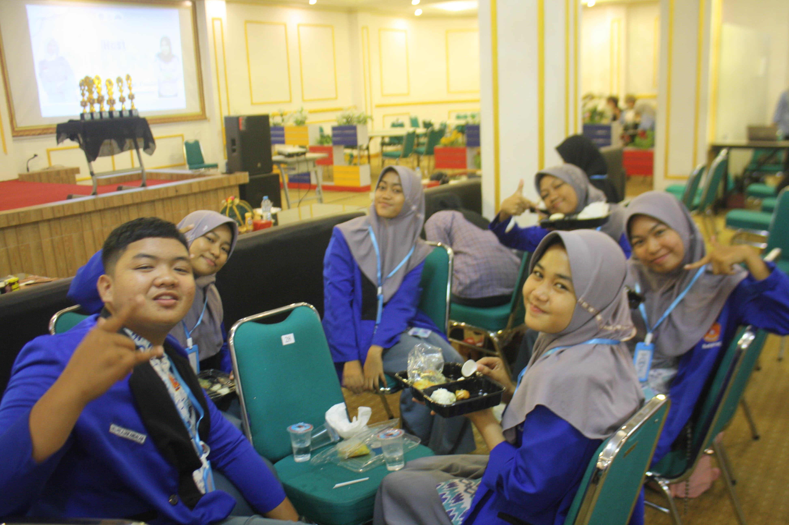

NEWS
Berita SMAN 9 Wajo

Kegiatan pembelajaran geografi berlangsung dengan fokus materi tentang lingkungan biotik dan abiotik. Dalam sesi ini, guru menjelaskan bahwa lingkungan biotik mencakup semua makhluk hidup seperti manusia, hewan, dan tumbuhan, sementara lingkungan abiotik mencakup komponen tak hidup seperti tanah, air, udara, dan cahaya matahari. Kedua komponen ini saling berinteraksi membentuk keseimbangan dalam ekosistem.
Para siswa terlihat antusias saat diajak berdiskusi mengenai contoh-contoh interaksi antara biotik dan abiotik, seperti bagaimana tumbuhan memanfaatkan air dan cahaya matahari untuk fotosintesis, atau bagaimana hewan bergantung pada tumbuhan sebagai sumber makanan. Guru juga menggunakan gambar dan video interaktif untuk memberikan gambaran nyata mengenai hubungan antara komponen-komponen tersebut.